World editor
Lets find out about TatEngine World editor.
Lets find out about TatEngine World editor.
So we have some stuff here.
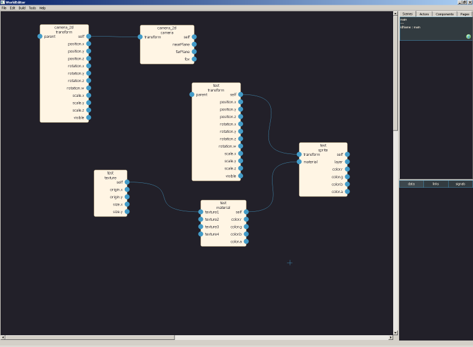Basic concent : everything is node, node have links to other nodes (A) and data for other nodes (B). Basicly it's same as unity component system concept (pure aggregation scene graph).
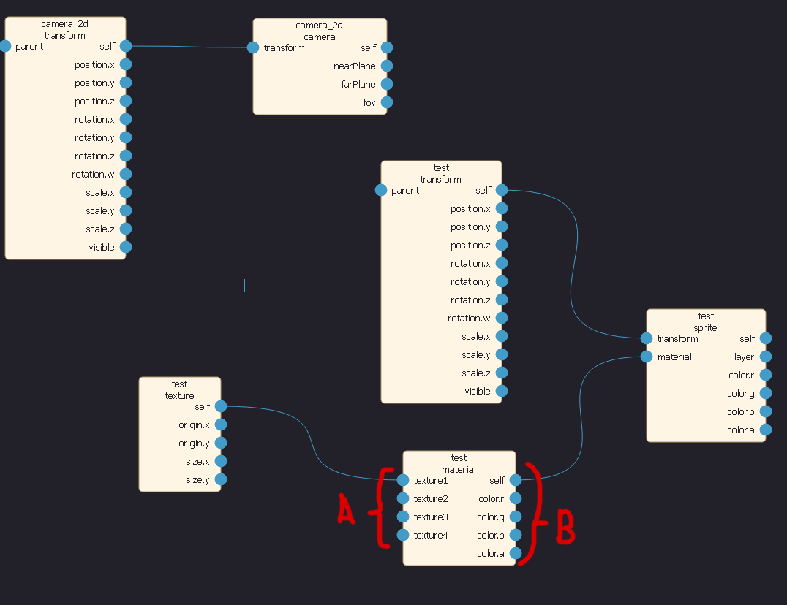Also node have data that not exposed to other nodes (not linkable).
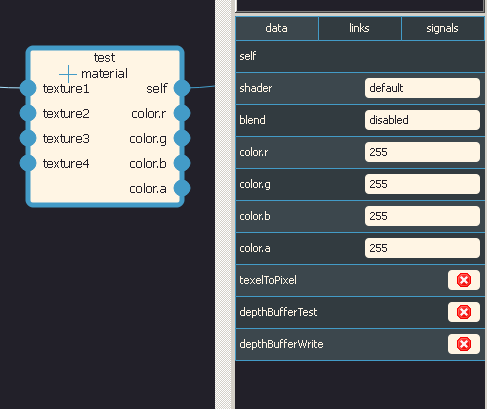There are a lot of node types.
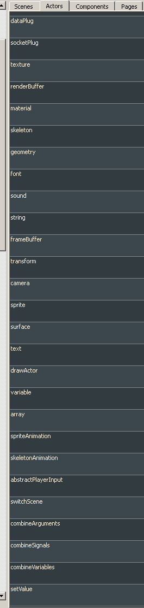Just put cursor to some free place, and click on transform node type, so you create node.
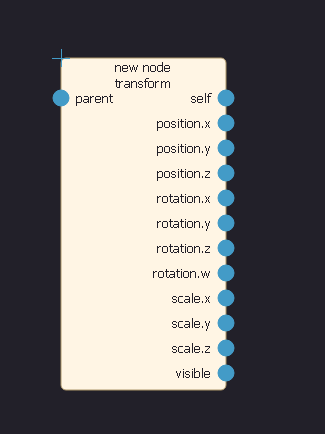Select it, and press delete (Del), and it goes away.
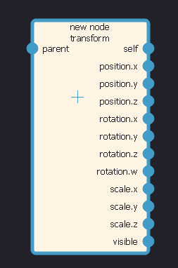Now select all nodes (Ctrl + A) and press fold (Shift + Space).
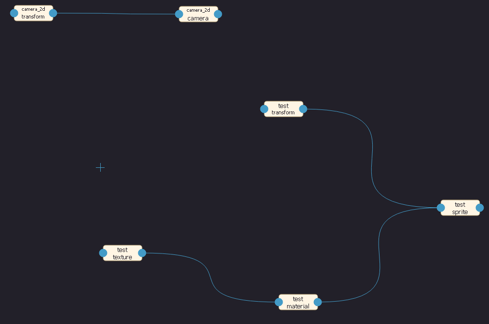Select nodes one by one, and move it with right mouse button, press shift to align to grid, make it prettier.
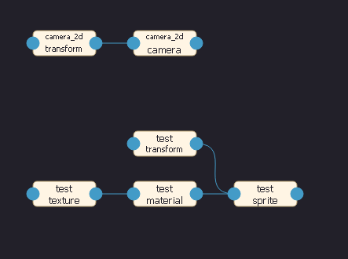Basicly node with type "sprite" is sprite instance, it has point where it should be rendered, and material with what it shoud rendered. It also has layer in which it should rendered.
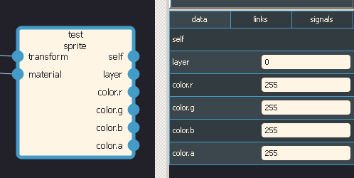Transform define world point with position, rotation (quaternion) and scale. Also it can have parent.
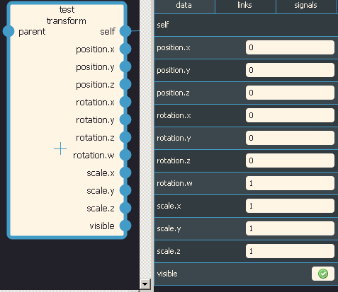Materials are more complex. You will find out details in editor_notes.txt
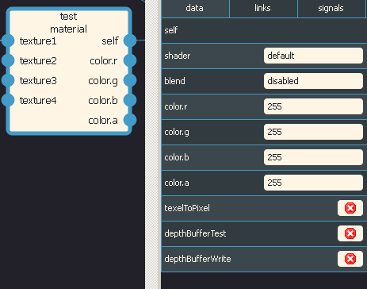Texture just define image (full or just part of it). Define size and origin of sprite (size and origin field, note - origin field used only when origin enabled is true). And some flags.
Just press Tools -> Update texture params and it will fill origin, size, imgSize, pixelA, pixelB from image file.
Just create texture, material, transform and sprite. Connect them. And set texture file name to chess.png and press Update texture params.
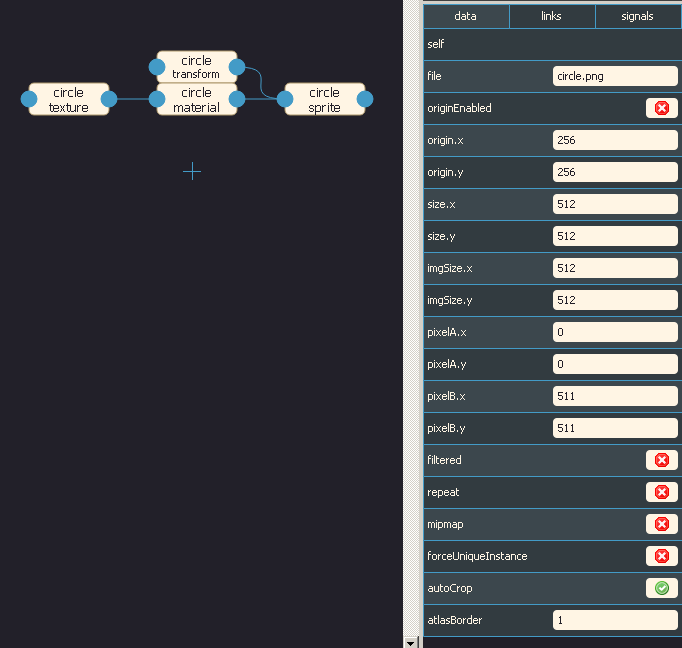Than select sprite and change it layer to -1.
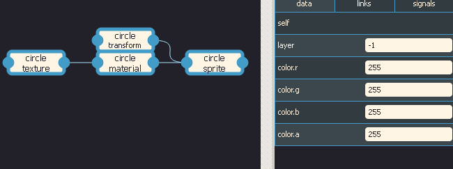Press Save project, Save for bakery, Bake and Run. You should see this.
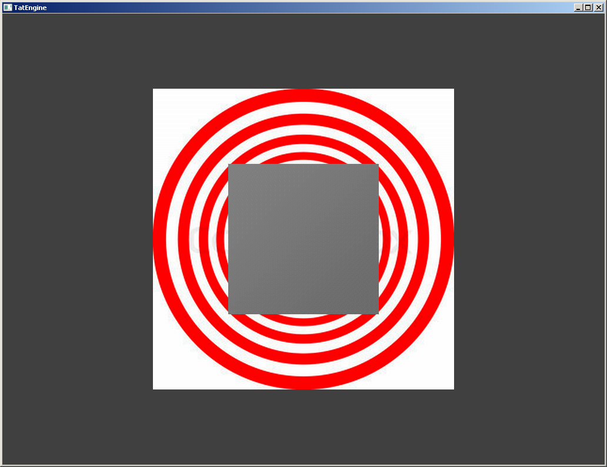